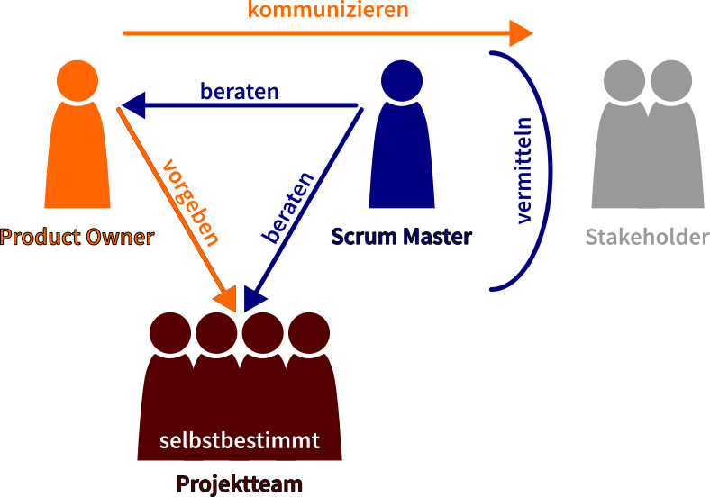
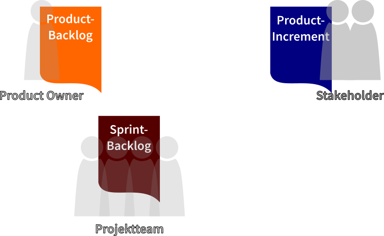
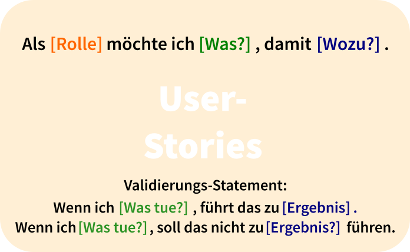
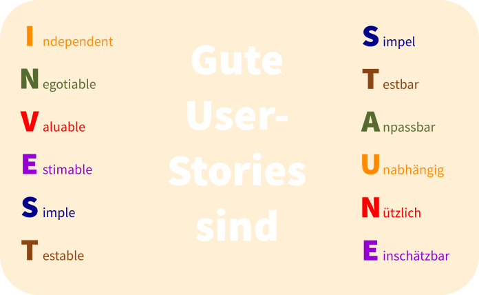
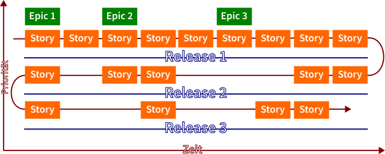
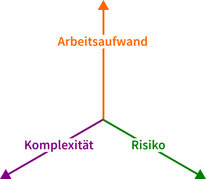
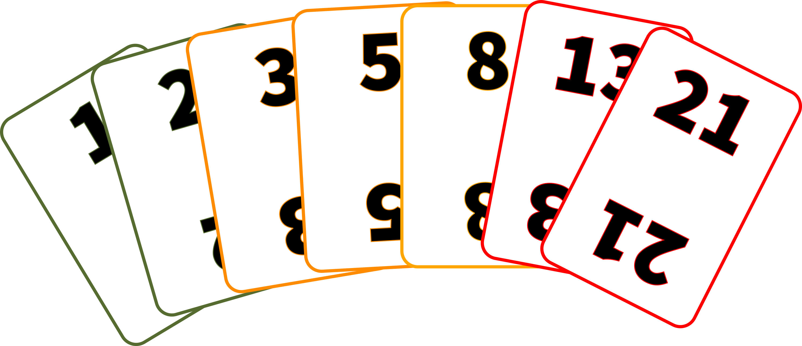
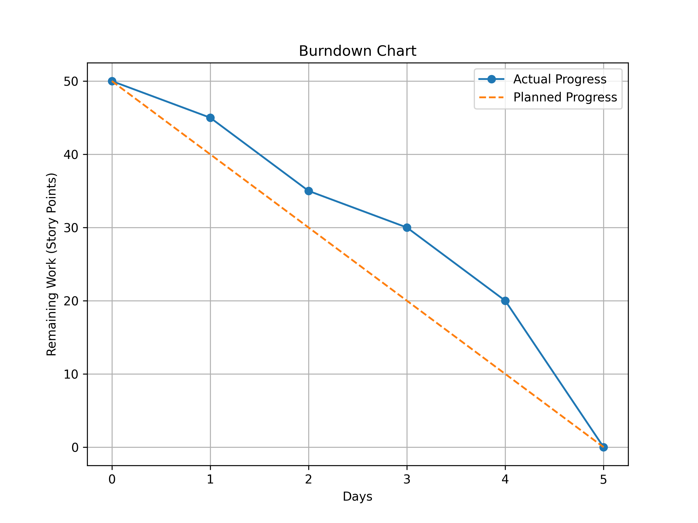

Scrum
Kom-ITIL
Sebastian Meisel
Einführung
- Scrum ist ein agiles Framework zur Projektverwaltung. Ursprünglich wurde es für die Softwareentwicklung formalisiert, findet aber mittlerweile auch in anderen Bereichen Anwendung.
- Das Konzept von Scrum wurde Anfang der 1990er Jahre von Ken Schwaber und Jeff Sutherland eingeführt.
- 2002 wurde Scrum unter Aufnahme der Ideen aus dem Agilen Manifest (2001) veröffentlicht.
Rollen

Abbildung 1: Scrum Rollen
Product Owner
- Der Product Owner ist verantwortlich für die Definition der Produktanforderungen und deren Priorisierung im Product Backlog.
- Er ist für die Kommunikation mit den Stakeholdern verantwortlich.
- Er ist kein Teil des Projektteams.
- Er gibt vor, in welcher Reihenfolge die Anforderungen, die im Product Backlog stehen, bearbeitet werden und bestimmt die Akzeptanzkriterien für die Abnahme.
Scrum Master
- Der Scrum Master hilft dem Team, dem Scrum-Framework zu folgen, und beseitigt Hindernisse. Er vermittelt bei Konflikten zwischen dem Team und den Stakeholdern.
Entwicklungsteam
- Das Entwicklungsteam ist verantwortlich für die Lieferung potenziell versandfertiger Prototypen (Inkrementen) des Produkts.
- Es besteht aus 3 bis 9 Personen, möglichst aus verschiedenen Bereichen (z. B. Entwicklung, System-Administration, kaufmännischer Bereich).
- Arbeitet selbstbestimmt in Bezug auf Methodik und Reihenfolge der Aufgaben in einem Entwicklungszyklus (Sprint).
Artefakte

Abbildung 2: Scrum Artefakte
Product Backlog
- Das Product Backlog ist eine dynamische Liste von Funktionen, Erweiterungen, Fehlerbehebungen und technischen Aanforderungen für das gesamte Projekt.
- Für das Product Backlog ist der Product Owner verantwortlich.
Sprint Backlog
- Das Sprint Backlog enthält die Aufgaben, die das Entwicklungsteam beschließt, während eines einzelnen Sprints zu bearbeiten.
Inkrement
- Das Inkrement ist die Summe aller im Sprint abgeschlossenen Product-Backlog-Elemente.
- Es sollte ein auslieferbares Produkt sein.
- Das Inkrement dient dazu Feedback der Stakeholder einzuholen und sie über den Fortschritt zu informieren.
Sprint und Meetings

Abbildung 3: Sprint
Was ist ein Sprint?
Ein Sprint ist ein Entwicklungszyklus in Scrum.
- Zeitlich Begrenzt: Ein Sprint hat immer eine feste Dauer, meist zwischen einer und vier Wochen.
- Unveränderbar: Die Dauer und die Aufgaben im Sprint Backlog können nach Beginn des Sprints nicht mehr geändert werden.
- Zielorientiert: Jeder Sprint hat ein Sprint-Ziel, das den Fokus und den Wert des zu liefernden Inkrements definiert.
- Inkremente: Ein potenziell auslieferbares Produkt ("Inkrement") sollte am Ende eines jeden Sprints stehen.
Zu jedem Sprint gehören eine Reihe von Meetings.
Sprint-Planung
- Wann: Zu Beginn jedes Sprints
- Teilnehmer: Product Owner, Scrum Master, Entwicklungsteam, (optional: Stakeholder)
- Max. 2 Stunden pro Sprint Woche.
- Das Team plant die Arbeit, die im kommenden Sprint durchgeführt werden soll.
Daily Stand-up
- Wann: Täglich zur gleichen Zeit
- Teilnehmer: Entwicklungsteam, Scrum Master, (optional: Product Owner)
- Max. 15 Minuten.
- Ein kurzes Meeting, bei dem die Teammitglieder sich gegenseitig darüber informieren, woran sie gestern gearbeitet haben (Status-Update) und wo es eventuell Probleme gibt.
- Es sollen keine Konflikte oder technischen Details diskutiert werden.
Sprint Review
- Wann: Am Ende jedes Sprints
- Teilnehmer: Entwicklungsteam, Scrum Master, Product Owner, Stakeholder
- Max. eine Stunde je Sprintwoche.
- Wird am Ende des Sprints abgehalten, um das Inkrement zu inspizieren und das Product Backlog bei Bedarf anzupassen.
Sprint Retrospektive
- Wann: Nach dem Sprint Review und vor der nächsten Sprint-Planung
- Teilnehmer: Entwicklungsteam, Scrum Master, Product Owner
- Max. 45 Minuten je Sprintwoche.
- Ein Meeting, bei dem das Team bespricht, was gut gelaufen ist, was nicht, und wie sie sich im nächsten Sprint verbessern können.
- Hier soll offen gesprochen und auch Konflikte geklärt werden, um diese aus dem eigentlichen Sprint rauszuhalten.
Typische Werkzeuge
User-Story

Abbildung 4: User Story
INVEST-Kriterien

Abbildung 5: INVEST-Kriterien
User Journey zur Erstellung einer Software für Projektrisikomanagement
- User-Story 1: Risiken erfassen
- Als Projektmanager
- möchte ich eine einfache Möglichkeit haben, Projektrisiken zu erfassen
- damit ich eine umfassende Risikoliste erstellen kann.
- User-Story 2: Risiken priorisieren
- Als Projektmanager
- möchte ich Risiken bewerten können
- damit ich weiß, welche Risiken dringend sind.
- User-Story 3: Risiken überwachen
- Als Projektmanager
- möchte ich den Status der Risiken verfolgen können
- damit ich die Wirksamkeit der Gegenmaßnahmen beurteilen kann.
Definition of Done
- Die Kriterien, die erfüllt sein müssen, damit eine User-Story als abgeschlossen gilt.
Story-Map

Abbildung 6: Story-Map
- Ein visuelles Hilfsmittel zur Darstellung der Benutzererfahrung und zur Priorisierung von User-Stories.
- Strukturiert in Aktivitäten, Aufgaben und User-Stories.
Story-Points

Abbildung 7: Kriterien zur Vergabe von Story-Points
- Story-Points sind eine abstrakte Einheit zur Schätzung des relativen Aufwands einer Aufgabe.
- Aufgaben werden im Verhältnis zueinander bewertet, nicht in absoluten Zeiteinheiten.
- Story-Points werden oft unter Berücksichtigung von drei Hauptfaktoren vergeben: Zeitaufwand, Komplexität und Risiko/Unsicherheit.
- Zeitaufwand: Wie viel Zeit wird benötigt, um die User-Story abzuschließen?
- Komplexität: Wie komplex ist die User-Story in Bezug auf die Anzahl der zu berücksichtigenden Variablen oder die Schwierigkeit der Implementierung?
- Risiko/Unsicherheit: Gibt es Unsicherheiten oder Risiken, die die Implementierung der User-Story beeinflussen könnten?
User-Story 1: Risiken erfassen
- Story-Points: 3
- Zeitaufwand: Mittel (UI-Entwicklung und Backend-Integration erforderlich)
- Komplexität: Niedrig (Einfaches Formular)
- Risiko/Unsicherheit: Niedrig (Keine großen technischen Herausforderungen)
- Begründung: Diese Story ist relativ einfach und stellt keine großen technischen Herausforderungen dar.
User-Story 2: Risiken priorisieren
- Story-Points: 5
- Zeitaufwand: Mittel (Bewertungsalgorithmus und UI erforderlich)
- Komplexität: Mittel (Bewertungsalgorithmus)
- Risiko/Unsicherheit: Mittel (Unklarheit über Bewertungskriterien)
- Begründung: Diese Story ist komplexer als die erste, da sie einen Bewertungsalgorithmus und mehr Unsicherheit beinhaltet.
User-Story 3: Risiken überwachen
- Story-Points: 8
- Zeitaufwand: Hoch (Mehrere Features und Datenvisualisierung erforderlich)
- Komplexität: Hoch (Zeitliche Verlaufsdarstellung und Statusaktualisierung)
- Risiko/Unsicherheit: Hoch (Unklarheit über Datenquellen und Visualisierungsanforderungen)
- Begründung: Diese Story ist die komplexeste und zeitaufwendigste von allen und beinhaltet das höchste Risiko und die größte Unsicherheit.
Planning Poker

Abbildung 8: Planning Poker
- Eine Technik zur Schätzung der Story-Points, bei der Teammitglieder Karten mit verschiedenen Werten verwenden.
- Jedes Teammitglied wählt eine Karte, die Karten werden aufgedeckt, und es wird diskutiert, bis ein Konsens erreicht ist.
Beispiel Planning-Poker für User-Story 1: Risiken erfassen
- Jedes Mitglied wählt eine Karte:
- Erfahrene Entwicklerin: Wählt 3 Story-Points, da sie ähnliche Features in der Vergangenheit implementiert hat.
- Software-Ingenieur: Wählt 5 Story-Points, da er Bedenken hinsichtlich der Backend-Integration hat.
- Entwickler in Ausbildung: Wählt 2 Story-Points, da er die Aufgabe für sehr einfach hält.
- Designerin: Wählt 3 Story-Points, da sie denkt, dass das UI-Design nicht kompliziert ist.
- Karten werden gleichzeitig aufgedeckt.
- Mitglieder erklären ihre Schätzungen.
- Erfahrene Entwicklerin: „Ich habe 3 Story-Points gewählt, weil ich bereits an ähnlichen Features gearbeitet habe. Die Backend-Integration ist ziemlich standardmäßig, und das UI ist auch nicht besonders komplex. Ich denke, das ist eine Aufgabe mittlerer Größe.”
- Software-Ingenieur: „Ich habe 5 Punkte gewählt, weil ich denke, dass die Backend-Integration einige Herausforderungen mit sich bringen könnte, insbesondere wenn wir an die Skalierbarkeit und die Datenbankperformance denken.”
- Entwickler in Ausbildung: „Ich habe 2 Punkte gewählt, weil die Aufgabe auf den ersten Blick einfach erscheint. Aber ich habe nicht viel Erfahrung mit solchen Features, daher könnte ich das unterschätzen.”
- Designerin: „Ich habe ebenfalls 3 Punkte gewählt. Das Design für ein einfaches UI-Formular ist ziemlich unkompliziert, und ich sehe keine großen Herausforderungen bei der Implementierung der UI.”
- Nach der Diskussion wählen alle erneut eine Karte.
- Erfahrene Entwicklerin: Wählt weiterhin 3 Story-Points.
- Software-Ingenieur: Wählt 3 Story-Points, da die Begründung der Entwicklerin ihn überzeugt hat.
- Entwickler in Ausbildung: Wählt 3 Story-Points, da ihm bewusst geworden ist, dass er die Aufgabe unterschätzt hat.
- Designerin: Wählt weiterhin 3 Story-Points.
- Einigung auf 3 Story-Points.
Burn-Down-/ Burn-Up-Chart

Abbildung 9: Burn-Down-Chart
- Nutzen
- Transparenz: Einfache Visualisierung des Fortschritts
- Planung: Einschätzung der Zielerreichung
- Anpassung: Möglichkeit für frühzeitige Korrekturen
Velocity
- Ein Maß für die Menge an Arbeit, die ein Team in einem Sprint abschließen kann.
- Wird oft in Story-Points ausgedrückt.
Mögliche Kritikpunkte
Die folgenden Aussagen sind eine Zusammenfassung eines Blog-Artikels auf Stackoverflow.
Effektivität und Produktivität
- Scrum könnte gute Entwickler zu durchschnittlichen machen, da es zu "Ticket-Hochscoren" und oberflächlicher Produktivität führen kann.
Management und Teamdynamik
- Schlechtes Management und nicht Scrum selbst ist oft die Ursache für Teamversagen.
Typische Scrum-Fallstricke
Standups sind für Manager
- Standups können zu einer Show der Produktivität werden, besonders wenn Manager anwesend sind.
Keine Zeit für den Austausch mit Kollegen
- Wenn die Geschwindigkeit die einzige Messgröße ist, hat das Team keine Zeit für Konsultationen oder Zweitmeinungen.
Falsche Priorisierung
- Entwickler könnten dazu neigen, einfachere Aufgaben zu wählen, um schnelle Erfolge zu erzielen.
Features über robusten Code
- Die Qualität des Codes könnte leiden, wenn Features als wichtigste Lieferergebnisse angesehen werden.
Neue Fehler müssen warten
- Fehler, die nach dem Sprint gefunden werden, werden als neue Arbeit betrachtet und könnten daher vernachlässigt werden.